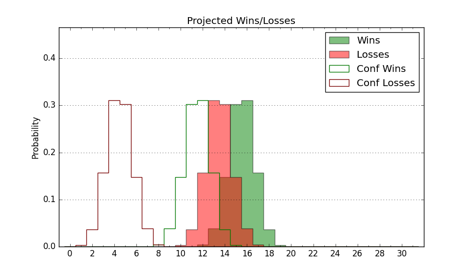

| Home | Game Probabilities | Conferences | Preseason Predictions | Odds Charts | NCAA Tournament |
| City: | Omaha, Nebraska | |
| Conference: | Summit (1st)
| |
| Record: | 7-1 (Conf) 11-10 (Overall) | |
| Ratings: | Comp.: -2.8 (195th) Net: -2.5 (196th) Off: 106.8 (157th) Def: 109.3 (239th) SoR: 0.0 (139th) |
| Remaining | ||||||
|---|---|---|---|---|---|---|
| Date | Opponent | Win Prob | Pred. | |||
| 2/1 | Denver (317) | 86.5% | W 80-67 | |||
| 2/6 | North Dakota (282) | 81.1% | W 85-75 | |||
| 2/8 | North Dakota St. (107) | 43.6% | L 76-77 | |||
| 2/13 | @ South Dakota St. (98) | 16.4% | L 70-82 | |||
| 2/15 | @ St. Thomas MN (116) | 20.4% | L 74-84 | |||
| 2/19 | @ UMKC (224) | 41.5% | L 68-70 | |||
| 2/22 | South Dakota (239) | 74.0% | W 92-84 | |||
| 3/1 | Oral Roberts (323) | 87.7% | W 86-72 | |||
| Previous | Game Score | |||||
| Date | Opponent | Win Prob | Result | Off | Def | Net |
| 11/7 | @Stetson (337) | 71.0% | W 79-76 | -6.4 | -2.8 | -9.1 |
| 11/9 | @Minnesota (101) | 17.3% | L 64-68 | -4.9 | 18.2 | 13.3 |
| 11/14 | @UNLV (94) | 15.2% | L 69-80 | -7.7 | 7.4 | -0.3 |
| 11/16 | @Southern Utah (254) | 49.4% | L 73-79 | -2.9 | -4.5 | -7.4 |
| 11/22 | (N) Alabama St. (310) | 75.4% | L 67-85 | -23.2 | -15.7 | -39.0 |
| 11/23 | @Akron (118) | 20.9% | L 84-92 | 24.4 | -20.3 | 4.1 |
| 11/24 | (N) Lamar (214) | 54.1% | W 65-59 | -7.3 | 16.0 | 8.7 |
| 11/30 | Abilene Christian (261) | 78.4% | L 55-71 | -26.1 | -7.0 | -33.0 |
| 12/4 | Montana St. (176) | 61.5% | L 65-76 | -9.3 | -15.7 | -25.0 |
| 12/7 | @Sacramento St. (329) | 68.5% | W 70-60 | -2.8 | 7.0 | 4.2 |
| 12/13 | @Northern Iowa (102) | 17.8% | L 58-78 | -13.6 | -3.9 | -17.5 |
| 12/15 | @Iowa St. (7) | 1.7% | L 51-83 | -13.9 | 5.7 | -8.2 |
| 12/21 | Cal Poly (229) | 71.7% | W 86-82 | 4.3 | -5.3 | -1.0 |
| 1/2 | @North Dakota (282) | 55.7% | W 95-85 | 19.0 | -5.0 | 14.0 |
| 1/4 | @North Dakota St. (107) | 18.5% | W 85-80 | 17.0 | 7.3 | 24.3 |
| 1/8 | UMKC (224) | 70.7% | W 77-58 | 8.7 | 17.0 | 25.8 |
| 1/11 | South Dakota St. (98) | 40.0% | W 87-80 | 13.8 | -2.1 | 11.8 |
| 1/15 | @Denver (317) | 65.3% | W 80-62 | 13.9 | 5.3 | 19.3 |
| 1/23 | St. Thomas MN (116) | 46.6% | W 89-78 | 12.5 | 6.6 | 19.2 |
| 1/25 | @Oral Roberts (323) | 67.6% | W 84-76 | 5.6 | -1.4 | 4.2 |
| 1/29 | @South Dakota (239) | 45.5% | L 87-91 | 1.4 | -3.6 | -2.2 |
| Stats & Trends | |||||
|---|---|---|---|---|---|
| Current | Day | Week | Month | Season | |
| Composite | -2.8 | +0.0 | +0.2 | +8.7 | +8.6 |
| Comp Rank | 195 | +3 | -1 | +94 | +94 |
| Net Efficiency | -2.5 | +0.0 | +0.0 | +9.0 | -- |
| Net Rank | 196 | -- | -8 | +95 | -- |
| Off Efficiency | 106.8 | +0.1 | +0.5 | +8.1 | -- |
| Off Rank | 157 | +1 | +8 | +125 | -- |
| Def Efficiency | 109.3 | -0.1 | -0.5 | +0.9 | -- |
| Def Rank | 239 | -1 | +1 | +27 | -- |
| SoS Rank | 208 | +5 | -5 | -16 | -- |
| Exp. Wins | 15.5 | +0.0 | -0.0 | +5.8 | +4.5 |
| Exp. Conf Wins | 11.5 | +0.0 | -0.0 | +5.8 | +4.8 |
| Conf Champ Prob | 15.4 | +0.2 | -17.7 | +15.1 | +9.7 |

| Advanced Stats | ||
|---|---|---|
| Stat | Value | Rank |
| Off Eff FG % | 0.508 | 167 |
| Off Ast Ratio | 0.134 | 247 |
| Off ORB% | 0.280 | 208 |
| Off TO Rate | 0.149 | 179 |
| Off FT Ratio | 0.341 | 153 |
| Def Eff FG % | 0.539 | 289 |
| Def Ast Ratio | 0.158 | 281 |
| Def ORB% | 0.241 | 32 |
| Def TO Rate | 0.136 | 262 |
| Def FT Ratio | 0.413 | 328 |